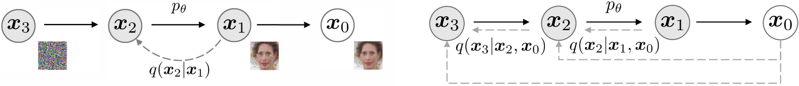
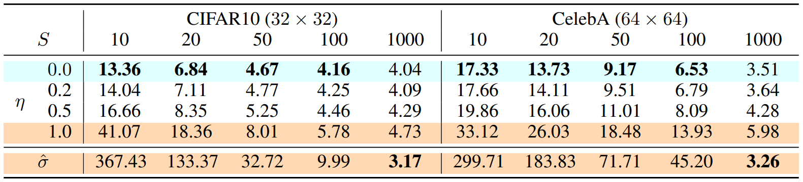
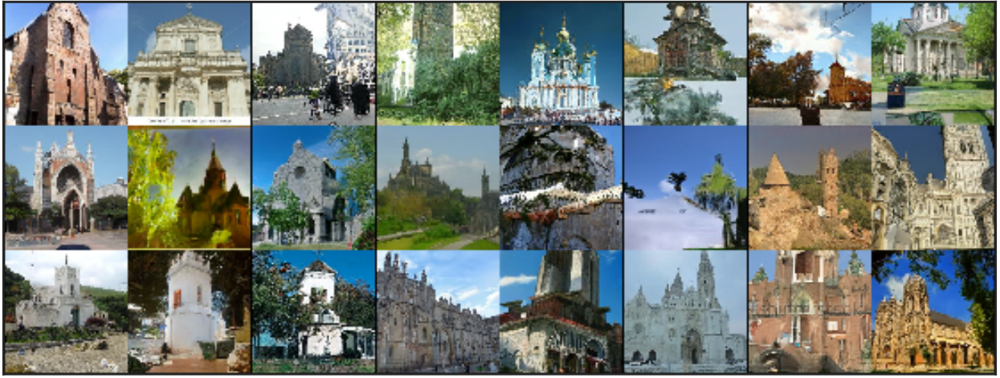
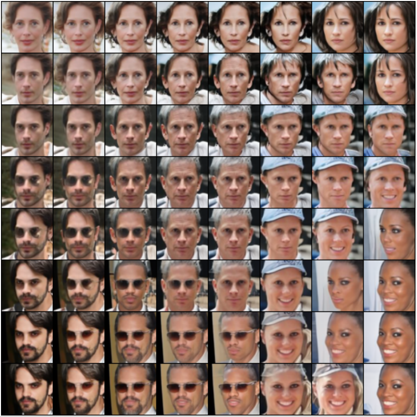

上一篇讲解了最基础的diffusion model (Sohl-Dickstein et al., 2015)，基于其简化的denoising diffusion probabilistic model (Ho et al. 2020, DDPM)以及对DDPM的优化 (Nichol & Dhariwal, 2021)。本篇讲解抽象程度更高的denoising diffusion implicit model (Song et al., 2020, DDIM)和分析逆向过程最优方差取值的论文 (Bao et al., 2022, Analytic-DPM)。
一、Denoising Diffusion Implicit Model (DDIM)
DDIM的初衷是希望在保留原有训练目标的前提下尽可能加速DDPM的采样生成过程。在具体的建模上，DDIM使用了非markov链的前向过程来重新建模DDPM的训练目标，得到了同一训练目标的不同建模方式。通过新的非markov链的建模方式，DDIM可以高效地进行采样生成，并且采样生成的过程是具有确定性的，即同样的初始隐变量生成的图片在high-level的特征上是相似的，因此可以通过操纵隐变量来进行图像的插值，而DDPM没有这一性质，隐变量是完全没有含义的。虽然训练目标与DDPM一致，但DDIM可以很好地权衡采样生成的效率和质量，在通过减少逆向步数而加速10～100倍的情况下在生成质量上大幅超过DDPM，不过从实验结果来看，在不进行加速时DDIM的效果与DDPM相差不大。
1. DDPM回顾
在上一篇文章中我们已经了解到Diffusion模型基于markov链通过共\(T\)步逐步加噪音的方式将原始数据\(\pmb{x}_0\)的分布转变为近似标准正态分布，每步的噪音分布由方差序列\(\{\beta_t\in(0,1)\}_{t=1}^T\)决定： \[ \begin{split} q(\pmb{x}_t|\pmb{x}_{t-1}) &:= \mathcal{N}(\sqrt{1 - \beta_t}\pmb{x}_{t-1}, \beta_t \pmb{I}), \alpha_t = 1-\beta_t, \bar{\alpha}_t = \prod_{i=1}^t \alpha_i \\ q(\pmb{x}_t|\pmb{x}_0) &:= \int q(\pmb{x}_{1:t}|\pmb{x}_0) d\pmb{x}_{1:(t-1)} = \mathcal{N}(\sqrt{\bar{\alpha}_t}\pmb{x}_0, (1-\bar{\alpha}_t)\pmb{I}) \end{split} \] 我们可以将\(\pmb{x}_t\)表示为\(\pmb{x}_t = \sqrt{\bar{\alpha}_t}\pmb{x}_0 + \sqrt{1-\bar{\alpha}_t}\pmb{\epsilon}, \pmb{\epsilon}\sim\mathcal{N}(\pmb{0}, \pmb{I})\)，且当\(\bar{\alpha}_T\)足够接近0时，\(q(\pmb{x}_T|\pmb{x}_0)\)收敛到标准正态分布。而模型从标准正态分布中采样\(\pmb{x}_T\)，通过建模难以直接计算的逆向分布\(p_\theta(\pmb{x}_{t-1}|\pmb{x}_t)=\mathcal{N}(\pmb{\mu}_\theta (\pmb{x}_t, t), \pmb{\Sigma}_\theta(\pmb{x}_t, t))\)一步步进行“去噪”从而生成\(\pmb{x}_0\)。整个过程都基于markov链，训练目标为使得模型生成的分布\(p_\theta(\pmb{x}_0)\)与真实数据分布\(q(\pmb{x}_0)\)尽可能接近，在DDPM简化\(\pmb{\Sigma}_\theta(\pmb{x}_t, t) = \sigma_t^2\pmb{I}\)（\(\sigma_t\)根据\(\{\beta_t\}\)设置）的操作下最后的目标函数为： \[ \mathcal{L}_\gamma (\pmb{\epsilon}_\theta):=\sum_{t=1}^T \gamma_t \mathbb{E}_{\pmb{x}_0\sim q(\pmb{x}_0), \pmb{\epsilon}_t\sim\mathcal{N}(\pmb{0}, \pmb{I})}[||\pmb{\epsilon}_t - \pmb{\epsilon}_\theta^{(t)}(\bar{\alpha}_t \pmb{x}_0 + \sqrt{1 - \bar{\alpha}_t}\pmb{\epsilon}_t)||^2] \] 其中权重\(\gamma_t = \frac{\beta_t^2}{2\sigma_t^2\alpha_t(1 - \bar{\alpha}_t)}\)在DDPM中也被简化为\(\gamma_t = 1\)。这样的建模方式必须保证总步数\(T\)足够大才能保证逆向过程的分布\(q(\pmb{x}_{t-1}|\pmb{x}_t)\)近似是正态分布（例如DDPM中取\(T=1000\)），所以导致DDPM生成时也要经过这么多次模型计算，从而生成效率低下。
2. 非Markov链的建模方式
如果保持现有的建模方式不变的话，那逆向过程的框架是无法改变的，至多通过加大生成时的采样间隔（例如每隔10步采样一次，总采样次数从1000变为100）来加速，但会大幅牺牲采样质量。因此我们希望找到一种新的建模前向和逆向过程的方式，使得最后的目标函数不变，但可以在生成时有加速效果。我们从目标函数的特征出发，首先观察到的是\(\mathcal{L}_\gamma\)只依赖的是边际分布（marginal distribution）\(q(\pmb{x}_t|\pmb{x}_0)\)，而不是联合分布（joint distribution）\(q(\pmb{x}_{1:T}|\pmb{x}_0)\)，因此任意一个边际分布与现有的一致的建模方式都可以保持目标函数不变。借助这个特点，DDIM首先抽象了以下过程，满足以下过程的时间序列的边际分布\(q(\pmb{x}_t|\pmb{x}_0)\)均与DDPM中的结果相同： \[ \begin{split} q_\sigma (\pmb{x}_{1:T}|\pmb{x}_0) := q_\sigma(\pmb{x}_T|\pmb{x}_0)\prod_{t=2}^Tq_\sigma(\pmb{x}_{t-1}|\pmb{x}_t, \pmb{x}_0) \end{split} \] 其中\(\sigma\in\mathbb{R}_{\geq 0}^T\)代表了每步扩散的随机程度（即方差），\(q_\sigma(\pmb{x}_T|\pmb{x}_0) := \mathcal{N}(\sqrt{\bar{\alpha}_T}\pmb{x}_0, (1-\bar{\alpha}_T)\pmb{I})\)，且\(\forall t > 1\)： \[ q_\sigma(\pmb{x}_{t-1}|\pmb{x}_t, \pmb{x}_0) := \mathcal{N}(\sqrt{\bar{\alpha}_{t-1}}\pmb{x}_0 + \sqrt{1 - \bar{\alpha}_{t-1}-\sigma_t^2}\cdot \frac{\pmb{x}_t - \sqrt{\bar{\alpha}_t}\pmb{x}_0}{\sqrt{1 - \bar{\alpha}_t}},\sigma_t^2 \pmb{I}) \] 这里\(q_\sigma(\pmb{x}_{t-1}|\pmb{x}_t, \pmb{x}_0)\)所属的正态分布的均值是通过推导得到的，目的是保证边际分布\(q(\pmb{x}_t|\pmb{x}_0)\)与DDPM的建模方式结果相同：
\(t=T\)时，我们已经定义\(q_\sigma(\pmb{x}_T|\pmb{x}_0) = \mathcal{N}(\sqrt{\bar{\alpha}_T}\pmb{x}_0, (1-\bar{\alpha}_T)\pmb{I})\)。
\(\forall t \leq T\)，我们有： \[ \begin{split} q_\sigma(\pmb{x}_{t-1}|\pmb{x}_0)&:= \int_{\pmb{x}_t}q_\sigma(\pmb{x}_t|\pmb{x}_0)q_\sigma(\pmb{x}_{t-1}|\pmb{x}_t, \pmb{x}_0)d\pmb{x}_t \\ q_\sigma(\pmb{x}_{t-1}|\pmb{x}_t, \pmb{x}_0) &:= \mathcal{N}(a\pmb{x}_t+b,\sigma_t^2 \pmb{I}) \end{split} \] 假如我们有\(q_\sigma(\pmb{x}_t|\pmb{x}_0) = \mathcal{N}(\sqrt{\bar{\alpha}_t}\pmb{x}_0, (1-\bar{\alpha}_t)\pmb{I})\)，则有： \[ q_\sigma(\pmb{x}_{t-1}|\pmb{x}_0) = \mathcal{N}(a\sqrt{\bar{\alpha}_t}\pmb{x}_0 + b, (\sigma_t^2 + a^2(1 - \bar{\alpha}_t))\pmb{I}), a > 0 \] （Bishop的《Pattern Recognition and Machine Learning》公式2.115有推导）。因为\(t=T\)时已经满足条件，所以我们只需令： \[ \begin{split} a\sqrt{\bar{\alpha}_t}\pmb{x}_0 + b &= \sqrt{\bar{\alpha}_{t-1}}\pmb{x}_0 \\ (\sigma_t^2 + a^2(1-\bar{\alpha}_t))\pmb{I} &= (1 - \bar{\alpha}_{t-1})\pmb{I} \end{split} \] 就有\(q_\sigma(\pmb{x}_{t-1}|\pmb{x}_0) = \mathcal{N}(\sqrt{\bar{\alpha}_{t-1}}\pmb{x}_0, (1-\bar{\alpha}_{t-1})\pmb{I})\)，从而可以完成从\(T\)至1的递推过程。而由这两个等式解出的\(a\)、\(b\)满足： \[ \begin{split} a &= \sqrt{\frac{1 - \bar{\alpha}_{t-1}-\sigma_t^2}{1 - \bar{\alpha}_t}} \\ b &= \sqrt{\bar{\alpha}_t}\pmb{x}_0 - \frac{\sqrt{1 - \bar{\alpha}_{t-1}-\sigma_t^2}\cdot\sqrt{\bar{\alpha}_t}\pmb{x}_0}{\sqrt{1 - \bar{\alpha}_t}} \end{split} \] 整理一下即可发现与论文中对\(q_\sigma(\pmb{x}_{t-1}|\pmb{x}_t, \pmb{x}_0)\)的设计是一致的。
在这样的建模下，我们可以通过Bayes公式得到前向过程： \[ q_\sigma(\pmb{x}_t|\pmb{x}_{t-1}, \pmb{x}_0) = \frac{q_\sigma(\pmb{x}_{t-1}|\pmb{x}_t, \pmb{x}_0)q_\sigma(\pmb{x}_t|\pmb{x}_0)}{q_\sigma(\pmb{x}_{t-1}|\pmb{x}_0)} \] 此时前向过程已不一定是markov链，而是每一步都可能与\(\pmb{x}_0\)有关，图1展示了和原来的建模的对比。

不同的\(\sigma\in\mathbb{R}_{\geq 0}^T\)取值对应了不同的过程。当\(\sigma \rightarrow \pmb{0}\)时，整个过程达到一个极端，随机性消失，\(\pmb{x}_T\)和\(\pmb{x}_0\)有唯一的映射关系，中间变换的路径也是唯一确定的，模型变为Implicit probabilistic model (Mohamed et al., 2016)。这也是DDIM名字的由来。在论文中，DDIM特指\(\sigma = \pmb{0}\)的特例，但为了后续说明方便，我们将\(\sigma\)取其他值的模型也称为DDIM。后面我们也会证明，当\(\sigma\)为某个特定值时，DDIM模型会退化为DDPM模型。而前向的过程虽然变得复杂了，但因为目标函数与DDPM是一致的，且只依赖边际分布\(q_\sigma(\pmb{x}_{t}|\pmb{x}_0)\)，而这一分布是容易计算的，所以生成训练数据\(\pmb{x}_t\)和训练的过程仍然和DDPM一样方便。
GAN也属于implicit probabilistic model的一种
3. 模型拟合逆向过程
虽然\(q_\sigma(\pmb{x}_{t-1}|\pmb{x}_t, \pmb{x}_0)\)是有解析式，但生成过程中我们并不知道\(\pmb{x}_0\)，所以模型仍然建模的是\(p_\theta^{(t)}(\pmb{x}_{t-1}|\pmb{x}_t)\)，并通过单向的markov链采样生成最后的\(\pmb{x}_0\)。我们之前有推导过，\(\pmb{x}_t = \sqrt{\bar{\alpha}_t}\pmb{x}_0 + \sqrt{1-\bar{\alpha}_t}\pmb{\epsilon}_t, \pmb{\epsilon}_t\sim\mathcal{N}(\pmb{0}, \pmb{I})\)，而我们的模型实际预测的是\(\pmb{\epsilon}_t\)，因此我们可以得到模型预测的\(\hat{\pmb{x}}_0\)： \[ \hat{\pmb{x}}_0 = f_\theta^{(t)}(\pmb{x}_t) := \frac{\pmb{x}_t - \sqrt{1-\bar{\alpha}_t} \pmb{\epsilon}_\theta^{(t)}(\pmb{x}_t)}{\sqrt{\bar{\alpha}_t}} \] 之后我们再通过\(q_\sigma(\pmb{x}_{t-1}|\pmb{x}_t, \pmb{x}_0)\)得到模型预测的\(\hat{\pmb{x}}_{t-1}\)： \[ \hat{\pmb{x}}_{t-1} = \sqrt{\bar{\alpha}_{t-1}}\hat{\pmb{x}}_0 + \sqrt{1 - \bar{\alpha}_{t-1}-\sigma_t^2}\cdot \frac{\pmb{x}_t - \sqrt{\bar{\alpha}_t}\hat{\pmb{x}}_0}{\sqrt{1 - \bar{\alpha}_t}} + \sigma_t \pmb{z}, \pmb{z} \sim \mathcal{N}(\pmb{0}, \pmb{I}) \] 由于文中指定\(\bar{\alpha}_0 = 1\)，而\(\sigma_t > 0\)，因此这里在\(t=1\)时需要处理一下边界，否则\(\sqrt{1 - \bar{\alpha}_{t-1}-\sigma_t^2}\)一项底数是负数。处理的方法文中是直接把这项去除，在\(t=1\)时最终预测\(\pmb{x}_0 = \hat{\pmb{x}}_0 + \sigma_1 \pmb{z}\)。综合起来我们可以得到： \[ p_\theta^{(t)} (\pmb{x}_{t-1}|\pmb{x}_t) = \left\{\begin{array}{rcl} \mathcal{N}(f_\theta^{(1)}(\pmb{x}_{1}), \sigma_1^2\pmb{I}),&t=1 \\ q_\sigma(\pmb{x}_{t-1}|\pmb{x}_t, f_\theta^{(t)}(\pmb{x}_{t})), &t\neq1 \end{array}\right. \] 我们也可以推导出这样建模下的目标函数与\(\mathcal{L}_\gamma\)是一致的。模型预测分布\(p_\theta(\pmb{x}_0)\)和真实数据分布\(q_\sigma(\pmb{x}_0)\)的交叉熵upper bound仍然与上一篇中基础diffusion模型的推导过程一致： \[ \mathcal{L}_{ce} = -\mathbb{E}_{\pmb{x}_0\sim q_\sigma(\pmb{x}_0)}[\log p_\theta(\pmb{x}_0)] \leq \mathbb{E}_{\pmb{x}_{0:T}\sim q_\sigma(\pmb{x}_{0:T})}[\log\frac{q_\sigma(\pmb{x}_{1:T}|\pmb{x}_0)}{p_\theta(\pmb{x}_{0:T})}] = J_\sigma(\pmb{\epsilon}_\theta) \] 之前我们也已经提到： \[ \begin{split} q_\sigma (\pmb{x}_{1:T}|\pmb{x}_0) &:= q_\sigma(\pmb{x}_T|\pmb{x}_0)\prod_{t=2}^Tq_\sigma(\pmb{x}_{t-1}|\pmb{x}_t, \pmb{x}_0)\\ p_\theta(\pmb{x}_{0:T}) &= p_\theta(\pmb{x}^T)\prod_{t=1}^Tp_\theta(\pmb{x}_{t-1}|\pmb{x}_t) \end{split} \] 我们将这两个等式代入\(J_\sigma(\pmb{\epsilon}_\theta)\)来对其进行变形，并把与参数无关项并入\(C\)（注意\(p_\theta(\pmb{x}_T)\)为标准正态分布，也与参数无关）： \[ \begin{split} &J_\sigma(\pmb{\epsilon}_\theta) \\ &= \mathbb{E}_{\pmb{x}_{0:T}\sim q_\sigma(\pmb{x}_{0:T})}[\log q_\sigma(\pmb{x}_T|\pmb{x}_0) + \sum_{t=2}^T\log q_\sigma (\pmb{x}_{t-1}|\pmb{x}_t, \pmb{x}_0) - \sum_{t=1}^T\log p_\theta^{(t)}(\pmb{x}_{t-1}|\pmb{x}_t) - \log p_\theta(\pmb{x}_T)]\\ &= \mathbb{E}_{\pmb{x}_{0:T}\sim q_\sigma(\pmb{x}_{0:T})}[\sum_{t=2}^TD_{KL}(q_\sigma(\pmb{x}_{t-1}|\pmb{x}_t, \pmb{x}_0)||p_\theta^{(t)}(\pmb{x}_{t-1}|\pmb{x}_t)) - \log p_\theta^{(1)}(\pmb{x}_0|\pmb{x}_1)] + C \end{split} \] 其中对于\(t > 1\)有： \[ \begin{split} &\mathbb{E}_{\pmb{x}_{0:T}\sim q_\sigma(\pmb{x}_{0:T})}[D_{KL}(q_\sigma(\pmb{x}_{t-1}|\pmb{x}_t, \pmb{x}_0)||p_\theta^{(t)}(\pmb{x}_{t-1}|\pmb{x}_t))] \\ =& \mathbb{E}_{\pmb{x}_0,\pmb{x}_t\sim q_\sigma(\pmb{x}_0, \pmb{x}_t)}[D_{KL}(q_\sigma(\pmb{x}_{t-1}|\pmb{x}_t, \pmb{x}_0)||q_\sigma(\pmb{x}_{t-1}|\pmb{x}_t, f_\theta^{(t)}(\pmb{x}_t)))]\\ =& \mathbb{E}_{\pmb{x}_0,\pmb{x}_t\sim q_\sigma(\pmb{x}_0, \pmb{x}_t)}[\frac{||\pmb{x}_0 -f_\theta^{(t)}(\pmb{x}_t) ||^2}{2\sigma_t^2}] \\ =& \mathbb{E}_{\pmb{x}_0,\pmb{x}_t\sim q_\sigma(\pmb{x}_0, \pmb{x}_t)}[\frac{||\pmb{x}_0 - \frac{\pmb{x}_t - \sqrt{1-\bar{\alpha}_t} \pmb{\epsilon}_\theta^{(t)}(\pmb{x}_t)}{\sqrt{\bar{\alpha}_t}}||^2}{2\sigma_t^2}], \pmb{x}_t = \sqrt{\bar{\alpha}_t}\pmb{x}_0 + \sqrt{1-\bar{\alpha}_t}\pmb{\epsilon}_t \\ =& \mathbb{E}_{\pmb{x}_0,\pmb{x}_t\sim q_\sigma(\pmb{x}_0, \pmb{x}_t)}[\frac{||\pmb{x}_0 - \frac{\pmb{x}_t - \sqrt{1-\bar{\alpha}_t} \pmb{\epsilon}_\theta^{(t)}(\pmb{x}_t)}{\sqrt{\bar{\alpha}_t}}||^2}{2\sigma_t^2}] \\ =& \frac{1-\bar{\alpha}_t}{2\sigma_t^2\bar{\alpha}_t}\mathbb{E}_{\pmb{x}_0,\pmb{x}_t\sim q_\sigma(\pmb{x}_0, \pmb{x}_t), \pmb{\epsilon}_t \sim\mathcal{N}(\pmb{0}, \pmb{I})}[||\pmb{\epsilon}_t - \pmb{\epsilon}^{(t)}_\theta(\pmb{x}_t)||^2] \end{split} \] 而对于\(t = 1\)有： \[ \begin{split} &\mathbb{E}_{\pmb{x}_{0:T}\sim q_\sigma(\pmb{x}_{0:T})}[-\log p_\theta^{(1)}(\pmb{x}_0|\pmb{x}_1)] \\ =& \mathbb{E}_{\pmb{x}_0,\pmb{x}_1\sim q_\sigma(\pmb{x}_0, \pmb{x}_1)}[D_{KL}(q_\sigma(\pmb{x}_{0}|\pmb{x}_1, \pmb{x}_0)||p_\theta^{(1)}(\pmb{x}_{0}|\pmb{x}_1))] - \mathbb{E}_{\pmb{x}_{0:T}\sim q_\sigma(\pmb{x}_{0:T})}[q_\sigma (\pmb{x}_{0}|\pmb{x}_1, \pmb{x}_0)] \\ =& \frac{1-\bar{\alpha}_1}{2\sigma_1^2\bar{\alpha}_1}\mathbb{E}_{\pmb{x}_0,\pmb{x}_1\sim q_\sigma(\pmb{x}_0, \pmb{x}_1), \pmb{\epsilon}_1 \sim\mathcal{N}(\pmb{0}, \pmb{I})}[||\pmb{\epsilon}_1 - \pmb{\epsilon}^{(1)}_\theta(\pmb{x}_1)||^2] + C \end{split} \] 所以整体有： \[ J_\sigma(\pmb{\epsilon}_\theta) = \sum_{t=1}^T \frac{1-\bar{\alpha}_t}{2\sigma_t^2\bar{\alpha}_t}\mathbb{E}_{\pmb{x}_0,\pmb{x}_t\sim q_\sigma(\pmb{x}_0, \pmb{x}_t), \pmb{\epsilon}_t \sim\mathcal{N}(\pmb{0}, \pmb{I})}[||\pmb{\epsilon}_t - \pmb{\epsilon}^{(t)}_\theta(\pmb{x}_t)||^2] + C = \mathcal{L}_\gamma(\pmb{\epsilon}_\theta) + C \] 其中\(\gamma_t = \frac{1-\bar{\alpha}_t}{2\sigma_t^2\bar{\alpha}_t}\)，去掉常数\(C\)之后\(J_\sigma(\pmb{\epsilon}_\theta)\)即与\(\mathcal{L}_\gamma(\pmb{\epsilon}_\theta)\)等价。而DDPM中直接将\(\gamma_t\)简化为1，因为从优化角度而言，每步\(t\)对应的参数是相互独立的，因此最小化所有项加权求和的最优解等价于单独最小化每一项得到的最优解。而不同的\(\sigma\)取值产生的目标函数的区别只在于不同的\(\gamma_t\)，也就是说令\(\gamma_t = 1\)得到的简化目标函数\(\mathcal{L}_{\pmb{1}}(\pmb{\epsilon}_\theta)\)所训练出来模型是对于任意\(\sigma\)通用的！因此我们可以用DDPM论文中训练的模型结合DDIM的采样方式进行采样，并且可以尝试选取不同的\(\sigma\)（这代表不同的过程，但都满足DDIM的框架）。
4. 与DDPM的关系
其实我们从目标函数的推导中可以看出，DDPM和DDIM的训练目标其实都是让预测的分布\(p_\theta(\pmb{x}_{t-1}|\pmb{x}_t)\)尽可能与分布\(q_\sigma(\pmb{x}_{t-1}|\pmb{x}_t, \pmb{x}_0)\)接近。我们比较在DDPM的markov链建模以及DDIM的非markov链建模下的\(q_\sigma(\pmb{x}_{t-1}|\pmb{x}_t, \pmb{x}_0)\)： \[ \begin{split} \text{DDPM}:\ &q_\sigma(\pmb{x}_{t-1}|\pmb{x}_t, \pmb{x}_0) = \mathcal{N}(\frac{\sqrt{\alpha_t}(1 - \bar{\alpha}_{t-1})}{1 -\bar{\alpha}_t}\pmb{x}_t + \frac{\sqrt{\bar{\alpha}_{t-1}}\beta_t}{1-\bar{\alpha}_t}\pmb{x}_0, \frac{\beta_t(1-\bar{\alpha}_{t-1})}{(1-\bar{\alpha}_t)}\pmb{I})\\ \text{DDIM}:\ &q_\sigma(\pmb{x}_{t-1}|\pmb{x}_t, \pmb{x}_0) := \mathcal{N}(\sqrt{\bar{\alpha}_{t-1}}\pmb{x}_0 + \sqrt{1 - \bar{\alpha}_{t-1}-\sigma_t^2}\cdot \frac{\pmb{x}_t - \sqrt{\bar{\alpha}_t}\pmb{x}_0}{\sqrt{1 - \bar{\alpha}_t}},\sigma_t^2 \pmb{I}) \end{split} \] 可以发现如果我们取\(\sigma_t = \sqrt{\frac{\beta_t(1-\bar{\alpha}_{t-1})}{(1-\bar{\alpha}_t)}}\)的话，我们可以发现两者的\(q_\sigma(\pmb{x}_{t-1}|\pmb{x}_t, \pmb{x}_0)\)变成一样的了： \[ \begin{split} &\sigma_t^2 = \frac{\beta_t(1-\bar{\alpha}_{t-1})}{(1-\bar{\alpha}_t)} \\ &\sqrt{\bar{\alpha}_{t-1}}\pmb{x}_0 + \sqrt{1 - \bar{\alpha}_{t-1}-\sigma_t^2}\cdot \frac{\pmb{x}_t - \sqrt{\bar{\alpha}_t}\pmb{x}_0}{\sqrt{1 - \bar{\alpha}_t}} \\ =& \sqrt{\bar{\alpha}_{t-1}}\pmb{x}_0 +\sqrt{(1 - \bar{\alpha}_{t-1})(1 - \frac{\beta_t}{1 - \bar{\alpha}_t})}\cdot \frac{\pmb{x}_t - \sqrt{\bar{\alpha}_t}\pmb{x}_0}{\sqrt{1 - \bar{\alpha}_t}}\\ =& \sqrt{\bar{\alpha}_{t-1}}\pmb{x}_0 +\sqrt{(1 - \bar{\alpha}_{t-1})(\frac{\alpha_t(1 - \bar{\alpha}_{t-1})}{1 - \bar{\alpha}_t})}\cdot \frac{\pmb{x}_t - \sqrt{\bar{\alpha}_t}\pmb{x}_0}{\sqrt{1 - \bar{\alpha}_t}} \\ =& \frac{\sqrt{\alpha_t}(1 - \bar{\alpha}_{t-1})}{1 -\bar{\alpha}_t}\pmb{x}_t + \sqrt{\bar{\alpha}_{t-1}}\pmb{x}_0 - \frac{\sqrt{\alpha_t\bar{\alpha}_t}(1 - \bar{\alpha}_{t-1})}{1 -\bar{\alpha}_t}\pmb{x}_0 \\ =& \frac{\sqrt{\alpha_t}(1 - \bar{\alpha}_{t-1})}{1 -\bar{\alpha}_t}\pmb{x}_t + \sqrt{\bar{\alpha}_{t-1}}(1 - \frac{\alpha_t(1 - \bar{\alpha}_{t-1})}{1 - \bar{\alpha}_t})\pmb{x}_0 \\ =& \frac{\sqrt{\alpha_t}(1 - \bar{\alpha}_{t-1})}{1 -\bar{\alpha}_t}\pmb{x}_t + \frac{\sqrt{\bar{\alpha}_{t-1}}\beta_t}{1-\bar{\alpha}_t}\pmb{x}_0 \end{split} \] 理所当然地，生成过程每步更新的方程也会一致： \[ \begin{split} \text{DDPM: }\pmb{x}_{t-1}& = \frac{1}{\sqrt{\alpha_t}}(\pmb{x}_t - \frac{1 - \alpha_t}{\sqrt{1 - \bar{\alpha}_t}}\pmb{\epsilon}_\theta^{(t)}(\pmb{x}_t)) + \sigma_t\pmb{z}\\ \text{DDIM: }\pmb{x}_{t-1}& = \sqrt{\bar{\alpha}_{t-1}}\hat{\pmb{x}}_0 + \sqrt{1 - \bar{\alpha}_{t-1}-\sigma_t^2}\cdot \frac{\pmb{x}_t - \sqrt{\bar{\alpha}_t}\hat{\pmb{x}}_0}{\sqrt{1 - \bar{\alpha}_t}} + \sigma_t \pmb{z} \\ &= \frac{\sqrt{\alpha_t}(1 - \bar{\alpha}_{t-1})}{1 -\bar{\alpha}_t}\pmb{x}_t + \frac{\sqrt{\bar{\alpha}_{t-1}}\beta_t}{1-\bar{\alpha}_t}\hat{\pmb{x}}_0 + \sigma_t \pmb{z} \\ &= \frac{\sqrt{\alpha_t}(1 - \bar{\alpha}_{t-1})}{1 -\bar{\alpha}_t}\pmb{x}_t + \frac{\sqrt{\bar{\alpha}_{t-1}}\beta_t}{1-\bar{\alpha}_t}\frac{\pmb{x}_t - \sqrt{1-\bar{\alpha}_t} \pmb{\epsilon}_\theta^{(t)}(\pmb{x}_t)}{\sqrt{\bar{\alpha}_t}} + \sigma_t \pmb{z} \\ &= \frac{1}{\sqrt{\alpha_t}}(\pmb{x}_t - \frac{1 - \alpha_t}{\sqrt{1 - \bar{\alpha}_t}}\pmb{\epsilon}_\theta^{(t)}(\pmb{x}_t)) + \sigma_t\pmb{z} \end{split} \] 而最直观的就是DDIM的前向过程\(q_\sigma(\pmb{x}_t|\pmb{x}_{t-1}, \pmb{x}_0)\)将退化为markov过程，即与\(\pmb{x}_0\)无关，我们通过计算密度函数即可证明，其中\(n\)为\(\pmb{x}\)的维数： \[ \begin{split} q_\sigma(\pmb{x}_t|\pmb{x}_{t-1}, \pmb{x}_0) &= \frac{q_\sigma(\pmb{x}_{t-1}|\pmb{x}_t, \pmb{x}_0)q_\sigma(\pmb{x}_t|\pmb{x}_0)}{q_\sigma(\pmb{x}_{t-1}|\pmb{x}_0)}\\ &= \frac{1}{(2\pi)^{n/2}(\frac{\sigma_t^2(1 - \bar{\alpha}_t)}{1-\bar{\alpha}_{t-1}})^{n/2}}\exp[-\frac{1}{2}(\frac{(\pmb{x}_{t-1} - \frac{\sqrt{\alpha_t}(1 - \bar{\alpha}_{t-1})}{1 -\bar{\alpha}_t}\pmb{x}_t - \frac{\sqrt{\bar{\alpha}_{t-1}}\beta_t}{1-\bar{\alpha}_t}\pmb{x}_0)^2}{\sigma_t^2}\\ &+\frac{(\pmb{x}_t - \sqrt{\bar{\alpha}_t}\pmb{x}_0)^2}{1 - \bar{\alpha}_t}-\frac{(\pmb{x}_{t-1} - \sqrt{\bar{\alpha}_{t-1}}\pmb{x}_0)^2}{1 - \bar{\alpha}_{t-1}})] \\ &= \frac{1}{(2\pi)^{n/2}\beta_t^{n/2}}\exp[-\frac{1}{2}(\frac{1}{\beta_t}\pmb{x}_t^2 - 2\cdot\frac{\sqrt{\alpha_t}}{\beta_t}\pmb{x}_{t-1}\pmb{x}_t + \frac{\alpha_t}{\beta_t}\pmb{x}_{t-1}^2)] \\ & = \frac{1}{(2\pi)^{n/2}\beta_t^{n/2}}\exp[-\frac{1}{2}\frac{(\pmb{x}_t - \sqrt{\alpha_t}\pmb{x}_{t-1})^2}{\beta_t}] \end{split} \] 所以我们可以看到\(q_\sigma(\pmb{x}_t|\pmb{x}_{t-1}, \pmb{x}_0)= \mathcal{N}(\sqrt{\alpha_t}\pmb{x}_{t-1}, \beta_t\pmb{I}) = q_\sigma(\pmb{x}_t|\pmb{x}_{t-1})\)，结果与DDPM中定义的前向markov过程是完全一致的。通过以上证明我们可以看出DDPM只是DDIM在取\(\sigma_t = \sqrt{\frac{\beta_t(1-\bar{\alpha}_{t-1})}{(1-\bar{\alpha}_t)}}\)时得到的一个特例，此时的前向过程为markov链，而一般的前向过程每步都对\(\pmb{x}_0\)有依赖。
5. 加速生成过程
之前的分析告诉我们，只要我们选定一种满足DDIM定义的过程，在\(T\)固定的情况下，训练的过程是一致的，模型可以在不同过程间复用而不用重新训练。我们更希望使用同样的模型在更小的\(T\)下进行生成，而这其实也是可行的，我们只需要定义一个步数小于\(T\)的过程，并且保证边际分布仍然与原来相同即可。例如我们考虑原本生成序列的一个子序列\(\{\pmb{x}_{\tau_1}, \pmb{x}_{\tau_2},...,\pmb{x}_{\tau_S}\}\)，其中\(\{\tau_i\}\)是长度为\(S\)的\([1,...,T]\)的升序子序列。我们可以找到特殊的\(\sigma\in\mathbb{R}_{\geq0}^S\)来定义一个过程，使得\(q(\pmb{x}_{\tau_i}|\pmb{x}_0) =\mathcal{N}(\sqrt{\bar{\alpha}_{\tau_i}}\pmb{x}_0, (1 - \bar{\alpha}_{\tau_i})\pmb{I})\)。此时我们仍可以使用总步长为\(T\)下训练的模型来进行生成，因为新的过程的训练目标其实是原始的\(\mathcal{L}_{\pmb{1}}\)求和中对应的\(S\)项的和，而每一项之间又是参数独立、互不影响的，因此训练完步长为\(T\)的模型其实包含了步长为\(S\)的模型。例如文中就取了原始\(T=1000\)的DDPM模型，测试了\(S\in\{10, 20,50, 10\}\)的结果，并且比对了选取不同的\(\sigma\)时的结果。为了方便，文中固定\(\sigma\)的形式为\(\eta\sqrt{\beta_{\tau_i}(1 - \bar{\alpha}_{\tau_{i-1}})/(1-\bar{\alpha}_{\tau_{i}})}\)，通过调节\(\eta\)的值来调整\(\sigma\)（即调整模型的随机性），当\(\eta=0\)时为确定性的DDIM，当\(\eta=1.0\)是为DDPM，\(\hat{\sigma}\)是DDPM论文中调参得出的超参。实验的结果在下表中：

可以看到的是在减小\(S\)大小，即加速生成时，生成的质量都在下降，只是DDPM的下降速度会快很多，而DDIM则下降慢很多。这个实验其实告诉我们DDIM可以通过调控采样步数\(S\)来权衡采样的速度和质量，且随机性\(\sigma\)会对这个权衡造成影响，确定性的DDIM看起来是最好的，DDPM在这个权衡下则是最差的。
6. 采样的一致性与插值
前面也提到，在DDIM的架构中，\(\sigma\)的大小其实代表的是整个过程的随机性。当\(\sigma=\pmb{0}\)时，整个过程完全没有随机性，为Implicit probabilistic model，即同样的\(\pmb{x}_T\)只能解码出同样的\(\pmb{x}_0\)。而\(\sigma=\sqrt{\frac{\beta_t(1-\bar{\alpha}_{t-1})}{(1-\bar{\alpha}_t)}}\)时，为DDPM，从实验结果来看是随机性非常大的，同样的\(\pmb{x}_T\)几乎每次解码的结果都大相径庭。对于\(\sigma=\pmb{0}\)的情况，即使我们取不同的解码路径\(\{\tau_i\}\)，按理说同一\(\pmb{x}_T\)解码出的\(\pmb{x}_0\)仍然会有一定的一致性（相似性），从而说明\(\pmb{x}_T\)对应的隐空间具有了语义信息。文中就对这一推论进行了验证，通过编码教堂的图片得到的\(\pmb{x}_T\)进行多次解码（选取不同的\(\{\tau_i\}\)），得到的图片基本都是教堂，在high-level的特征上是非常相似的：

当隐空间具有语义之后，就可以进行图片的插值，文中也是选了简单的插值函数： \[ \pmb{x}_T^{(\alpha)} = \frac{\sin((1-\alpha)\theta)}{\sin\theta}\pmb{x}_T^{(0)}+\frac{\sin(\alpha\theta)}{\sin\theta}\pmb{x}_T^{(1)} \] 最终得到了看上去非常不错的插值结果：

二、最优的逆向方差取值：Analytic-DPM
纵观DDIM和其特例DDPM，模型学习的都是逆向过程的Markov链\(p_\theta(\pmb{x}_{t-1}|\pmb{x}_t) = \mathcal{N}(\pmb{\mu}_\theta^{(t)}(\pmb{x}_t), \tilde{\sigma}_{t}^2\pmb{I})\)，其中\(\pmb{\mu}_\theta(\pmb{x}_t, t)\)用以下方法进行参数化： \[ \pmb{\mu}_\theta^{(t)}(\pmb{x}_t) = \tilde{\pmb{\mu}}(\pmb{x}_t, \frac{1}{\sqrt{\bar{\alpha}_t}}(\pmb{x}_t - \sqrt{1-\bar{\alpha}_t}\pmb{\epsilon}_\theta^{(t)}(\pmb{x}_t))) = \frac{1}{\sqrt{\alpha_t}}(\pmb{x}_t - \frac{\beta_t}{\sqrt{1 - \bar{\alpha}_t}}\pmb{\epsilon}_\theta^{(t)}(\pmb{x}_t)) \] 而在方差参数\(\tilde{\sigma}_t^2\)的选取上，DDPM使用\(\tilde{\sigma}_t^2 = \frac{\beta_t(1-\bar{\alpha}_{t-1})}{(1-\bar{\alpha}_t)}\)和\(\tilde{\sigma}_t^2 = \beta_t\)两种取法，而DDIM则直接取\(q(\pmb{x}_{t-1}|\pmb{x}_t, \pmb{x}_0)\)的方差\(\tilde{\sigma}_t^2 = \sigma_t^2\)。Fan et al., 2022 (Analytic-DPM) 则认为逆向过程的均值和方差是有理论最优的取值的，并真的证明了这点。逆向过程均值和方差的理论最优解满足以下形式： \[ \begin{split} {\pmb{\mu}_t}^*(\pmb{x}_t) &= \tilde{\pmb{\mu}}(\pmb{x}_t, \frac{1}{\sqrt{\bar{\alpha}_t}}(\pmb{x}_t - \sqrt{1-\bar{\alpha}_t}\pmb{\epsilon}_t(\pmb{x}_t)))\\ {\tilde{\sigma}^*_t}^2 &= \sigma_t^2 + \left(\sqrt{\frac{1 - \bar{\alpha}_t}{\alpha_t}} - \sqrt{1 - \bar{\alpha}_{t-1} - \sigma_t^2}\right)^2(1 - \mathbb{E}_{q_\sigma(\pmb{x}_t)}[\frac{||\pmb{\epsilon}_t(\pmb{x}_t)||^2}{d}]) \end{split} \] \(d\)为数据的维数。其中均值的最优值解析形式是与前序推导得出的结果是一致的，主要是因为这是通过最小化目标函数直接变形过来的。而目标函数中是没有\(\tilde{\sigma}_t^2\)项的，即此项实际与之前推导过程中舍弃的一些常数项有关。在\({\tilde{\sigma}^*_t}^2\)的最优值解析表达式中，比较难求的一项是\(\mathbb{E}_{q_\sigma(\pmb{x}_t)}[\frac{||\pmb{\epsilon}_t(\pmb{x}_t)||^2}{d}]\)，因为此项涉及前向过程的边际分布\(q_\sigma(\pmb{x}_t)\)，这是无法求解的。论文使用蒙特卡洛的方法采样近似这个期望： \[ \Gamma_t = \frac{1}{M}\sum_{m=1}^M \frac{||\pmb{\epsilon}_t(\pmb{x}_t)||^2}{d}, \pmb{x}_t\sim q_\sigma(\pmb{x}_t) \] 其中\(M\)是采样次数。论文通过实验也说明，\(M\)只需取很小的数量（10，100）即可得到方差较小的估计结果。除此之外，论文也计算了最优方差与边际分布\(q_\sigma(\pmb{x}_t)\)无关的上下限： \[ \sigma_t^2\leq {\tilde{\sigma}^*_t}^2\leq \sigma_t^2 + \left(\sqrt{\frac{1 - \bar{\alpha}_t}{\alpha_t}} - \sqrt{1 - \bar{\alpha}_{t-1} - \sigma_t^2}\right)^2 \] 具体的证明过程实在有点复杂，感兴趣的自行参考原文！